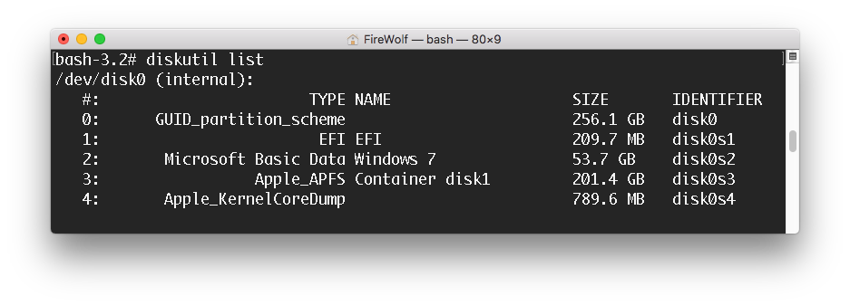
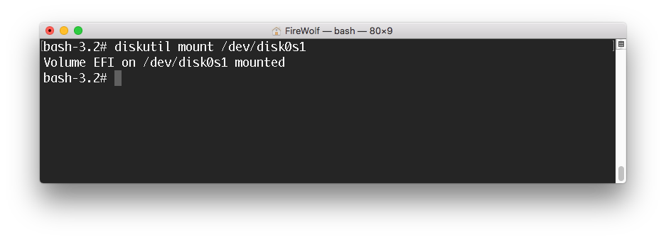

挂载 EFI 系统分区
方法一
内置应用包中提供了 ESP Mounter Pro v1.6 版，在启动器中打开它后，请单击状态栏的图标，选择对应的 EFI 系统分区点击挂载即可。
方法二
在启动器中打开终端，输入 diskutil list后找到想要挂载的 EFI 系统分区的标识符：/dev/diskXsY。
而后输入 diskutil mount /dev/diskXsY来挂载对应的 EFI 系统分区。如上图所示，我的 EFI 系统分区位于 /dev/disk0s1 上，所以我输入 diskutil mount /dev/disk0s1 后即可挂载该分区。待终端显示 /dev/diskXsY mounted 字样后，你就可以在 Path Finder 中找到挂载好的 EFI 系统分区了。